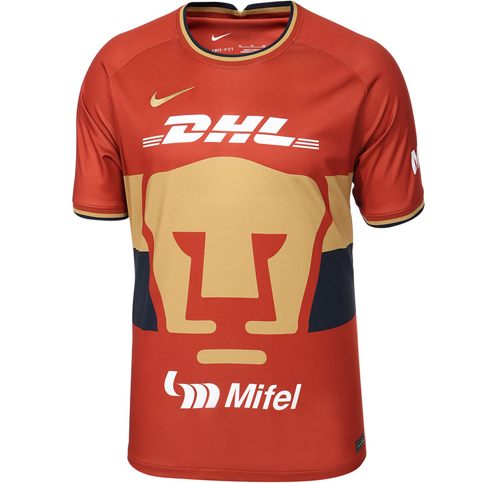

Pumas de la UNAM
Los Pumas de la UNAM no tuvieron un buen 2022 luego de perder la final de la Concacaf Champions League y no clasificar a la última liguilla de la Liga MX. Pero al menos el club auriazul logró ganar “la camiseta más bonita de fútbol” del año a nivel mundial.Y es que su tercer uniforme color terracota de la temporada 2021/22, de la marca Nike, fue elegida por expertos y aficionados como la de mejor diseño a través de una tradicional votación que realiza cada año el portal Footy Headlines, en la que participaron cuatro mil cibernautas.
De acuerdo con la firma de ropa deportiva, este jersey que obtuvo 1,027 votos se pintó de terracota como un tributo a la pista atlética del Estadio Olímpico Universitario. Su cuello redondo se decoró con remates en azul marino y dorado, haciendo juego con bloques bicolor sobre laterales que rodean el icónico rostro del puma al frente de la prenda. El top 10 de las más votadas lo completaron en el siguiente orden: Japón, Arsenal (Inglaterra), Huesca (España), Venecia (Italia), Vasco da Gama (Brasil), Cruzeiro (Brasil) y Ajax (Países Bajos).